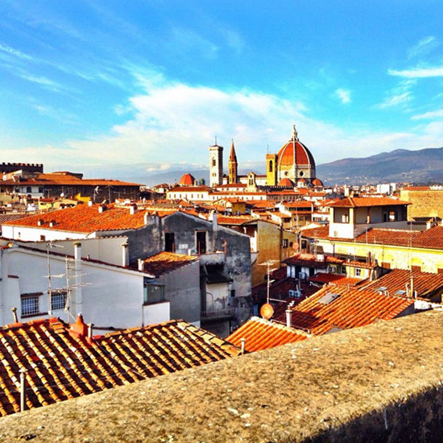
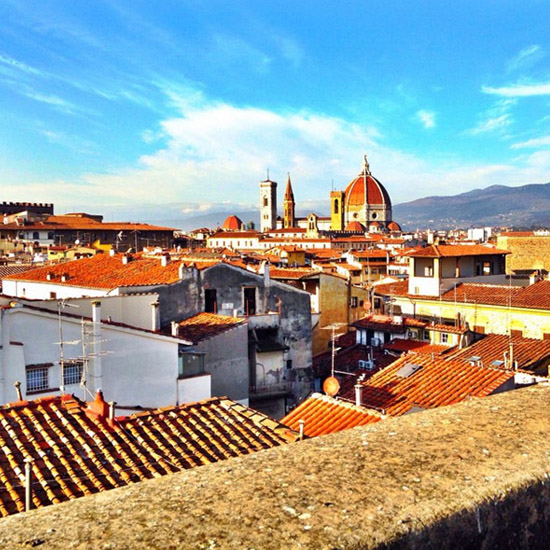

 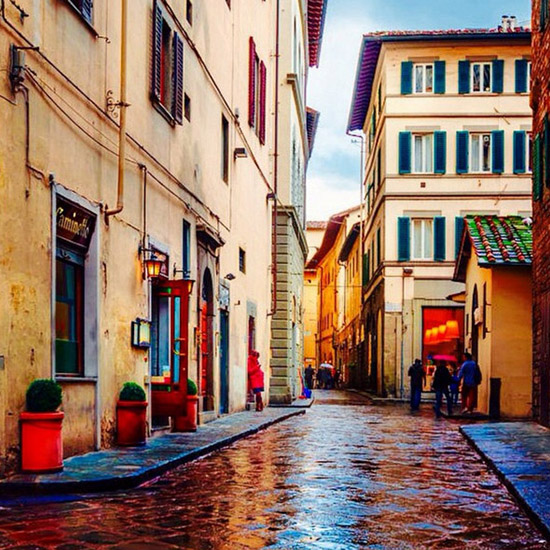
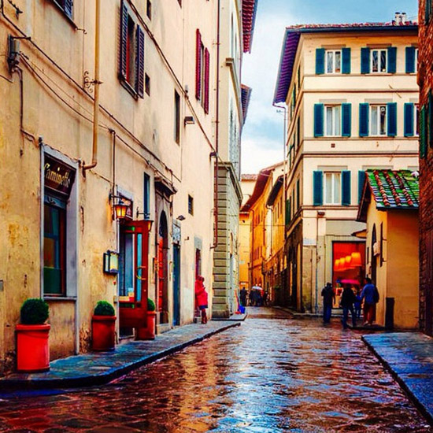
 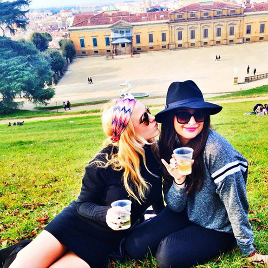
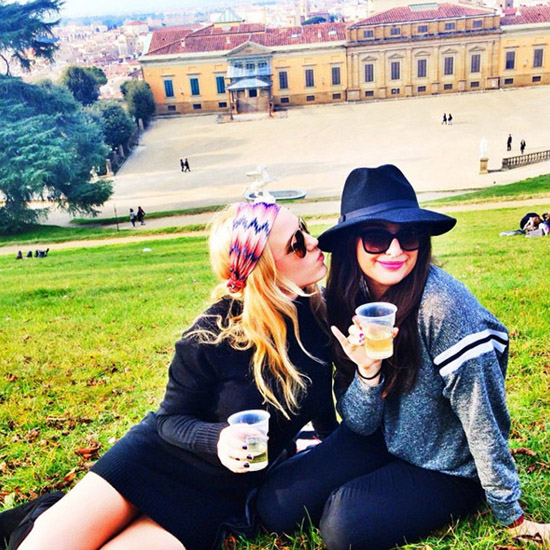
 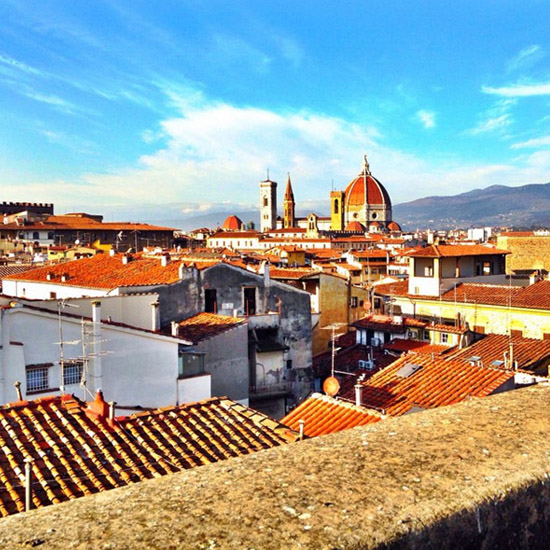
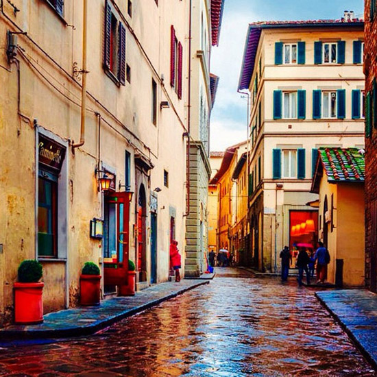
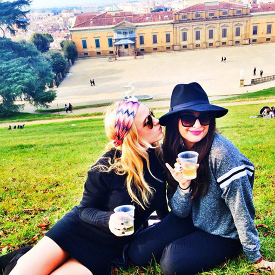
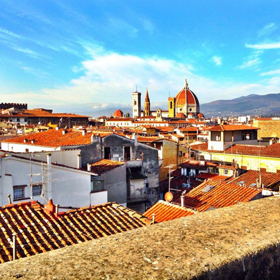
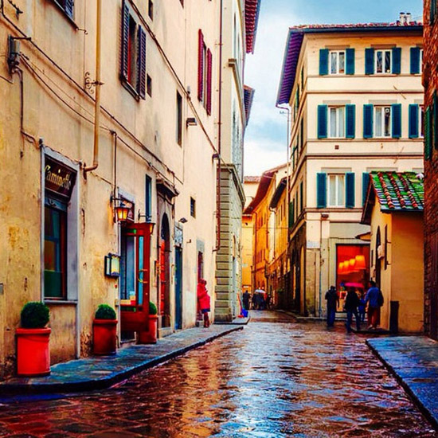
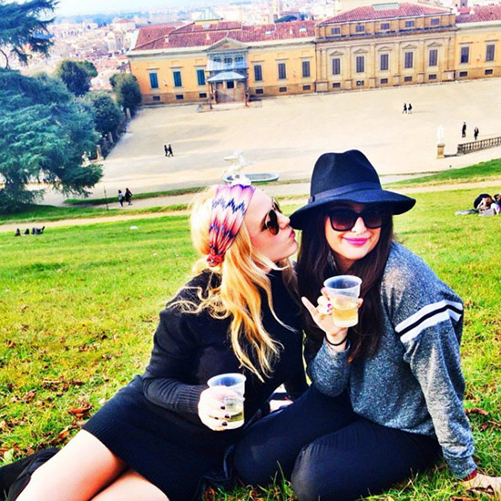
| CONTINENT | EUROPE |
| CURRENCY | EUROS |
| LANGUAGE | ITALIAN |
| POPULATION | 362,000 |
| TIPPING? | NO |
Starting your weekend in Florence right with the best paninis in the whole city. They're five euros, gigantic, and served on warm foccaccia. Get whatever meat, cheese, veggies, and spread you want, but fair warning they don't mix meats or have pesto, and the guys will humiliate any dumb American who wants both prosciutto and salami.

Right next to Vinaio, this museum has some of the most famous works of art in the world, like the Birth of Venus - the original pretty bitch. Crowds can be crazy so get tickets online ahead of time.
Outside of the Uffizi is the Piazza della Signoria, which has a lot of famous sculptures on display. Florence is all about art. The ugly brick castle is called the Palazzo Vecchio, which has more art (surprise!) but you should head straight for the staircase and climb the ~500 steps to the best view of Florence.

The most famous Church in Florence. It's not that impressive inside so just walk to the Piazza del Duomo and check it out from the outside. If you're hungry, the only acceptable gelato around here is Edoardo's. The rest are tourist traps not worth your calories tbh.
You visit Florence, you buy leather goods. That's the way it works. The leather market is a maze of stands by the Duomo. Watch your bag because pick pocketers love these crowds. Half the leather is probably fake anyways, so your best bet is going into the small shops along the edges of the market. Make sure you visit Massimo, the king of basic leather goods. He'll school you in Jewish geography and you'll walk away with 3 bags, 2 jackets, and a new best friend.

In Florence, as if you weren't eating enough carbs, they throw in this extra meal in between lunch and dinner called apperitivo. It's basically happy hour with appetizers and it's awesome. Go to the roof of the Westin Excelsior for great views and even better mojitos.
Dinner time! Gobbi has a great menu with pastas, meat, everything. The house rigatoni is incredible. Also, no Florentine meal would be complete without several bottles of Chianti.
Fridays in Florence are all about TwentyOne. Pregame at Red Garter and Kikuya, two American-dominated bars on Via dei Benci. At Kikuya, get a dragoon, which is basically a beer laced with Xanax. Yoflo - you only Florence once.
The bakeries in Florence do their baking for all the little cafes overnight. Legend says that some will open their doors to drunk Americans begging for a nutella-filled brioche at 3AM. Half the fun is finding the secret bakery, so I'll only hint that there's one somewhere between Red Garter and TwentyOne. Follow your nose!
The Academy, formally known as the Galleria dell'Accademia di Firenze, is the museum that houses Michelangelo's David. It's a must see and will only take 5 minutes. Pictures are forbidden to bonus points to whoever can snap a selfie with that hunk without security catching you!
The Ponte Vecchio is an old bridge across the Arno river, which divides Florence. It has mainly jewelry shops, but don't miss Madova, an old-world leather gloves store. You can't actually get a picture of the Ponte Vecchio while you're on the fucking Ponte Vecchio, duh, so that's what the Ponte Santa Trinita is for. It's the next bridge over and has these triangular platforms you can climb down onto for a new prof pic. Smile!
A necessary stop on the basic tour of Flo. Gusta is a study abroad favorite and deserves its praise. Get a margherita with pesto - you have to ask special for the pesto - or the spinach and ricotta special. If they don't make it into a heart for you, you're clearly a loser.
A castle turned museum, classic. Sometimes they have fashion exhibits so that's cool. Worth checking out on your way to the castle's backyard: the Boboli Gardens.
The Boboli Gardens are a huge, beautiful park. There are fountains, sculptures, wooded pathways and wide open grassy lawns. It's a great place to get lost on a beautiful afternoon, and by lost I mean sitting under a tree with multiple bottles of vino.
One of the best gelato places in the city. Get the chocolate, pistachio, or cookies flavor, and make sure it's in a cone because no one wants to see a cup on their insta feed.
It's a serious hike to this square, but the view of the whole city is so worth it. Go for sunset and bring wine with you - it's the move. It gets really crowded up there so no shame in going early to find a seat.
Giostra is expensive, but will be one of the best meals of your young life. Get steak fiorentina, pear ravioli, burrata, red wine fish, penne sorrentina - literally salivating. Also, the owner is like a descendent of the Medici family or some shit so that's cool.
Space is the club of all Florence clubs. It's huge and the MOST fun, but only if you go in VIP to avoid the creepy Italians. Space Saturdays are the shit and not to be missed.
The Museo Gucci is a necessary stop if you wanna feel trendy af. The museum is small but well done, and the cafe on the ground floor serves the best cappuccinos.
Reppubblica is a central square that has a merry-go-round and beautiful architecture, so like, photo op. You can pop into La Rinascente, the Saks of Italy, or wander up and down Via Tournoboni which is like 5th Ave. No better goodbye to Firenze than shopping!